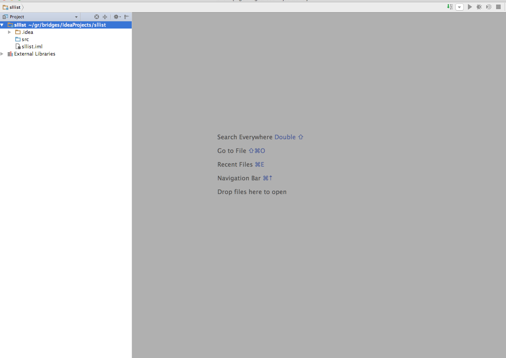
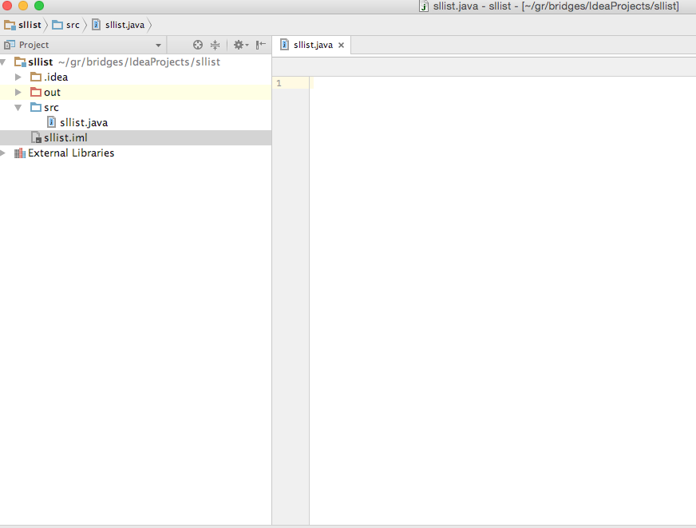
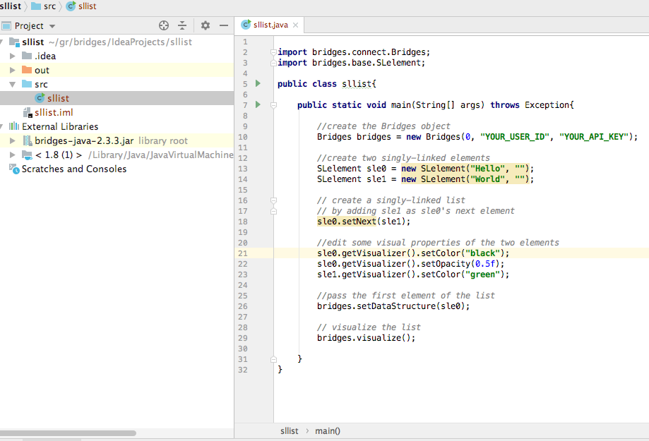
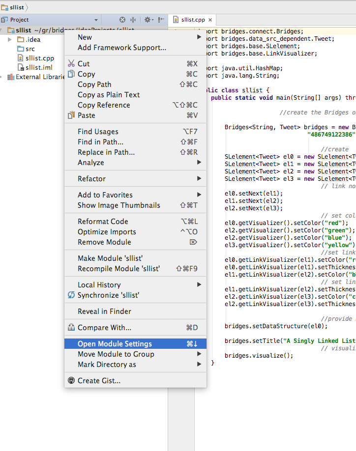
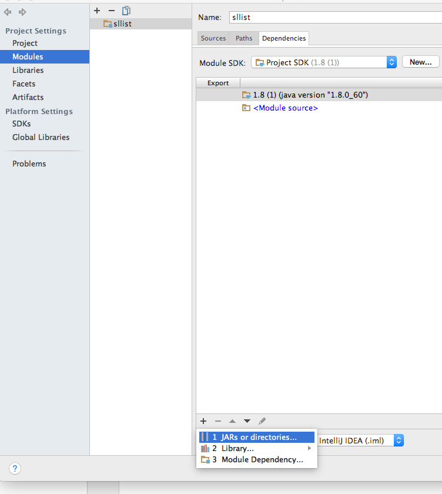
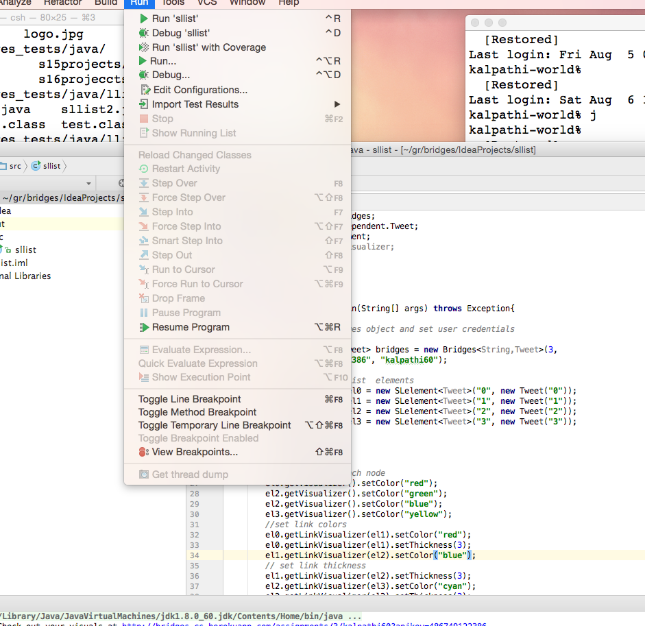
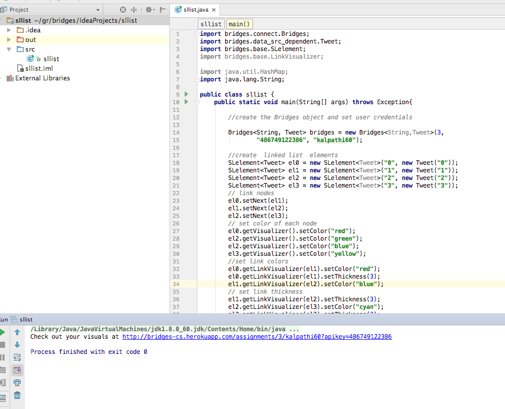

Step 1: Install IntelliJ IDE
- If you do not have IntelliJ
installed, download it from the
IntelliJ IDEA site and install it on your computer.
- IntelliJ comes with Java JDK 1.8, or you can configure it
to point to your Java installation.
- Open IntelliJ application after installation
|
Step 2: Create Bridges Account
- Visit the Bridges
main page
and create yourself an account by clicking the
login button on the top navigation bar.
Please ensure that
your user id is devoid of spaces, as it will be
used as part of the web link for your projects.
After creating your account, click
on your profile name in the upper right corner to
view your profile. Once in your profile, you will see your
API Key; you will need this API key in part 2
of the tutorial(as well as in every BRIDGES program
you write). NOTE: Make sure to remember
your password. There is no password recovery option,
and you can only have one account per email address.
|
Step 3: Create a Java Project
- Open File-->New-->Project
- Follow the Project menu directions and create a project
at a convenient location. This will create a new folder
on your drive.
- Create a new class file by clicking on the Project and
selecting(right click) sllist-->New-->File to
create sllist.java
- Example on right shows a class named sllist that
has been created.
|


|
Step 4: Create a Bridges Program
- We will illustrate a Singly Linked List Bridges program
here - for more details of this program, refer to the
User Guide /Tutorials
that provides fully documented Bridges examples for each
data structure.
- You may type in or copy/paste the BRIDGES program
to sllist.java created in Step 3
|

|
Step 5: Import Jar File into project
- Download the Bridges.jar file from
this link and save it somewhere convenient
on your drive.
- On IntelliJ, right click on your project and select
Open Module Settings Select Modules which will
show all the modules/Jars currently loaded.
- Click on the + button on the bottom left of the
window, and select 1. Jars or Directories. Navigate
to the folder containing the BRIDGES Jar file and load it in.
- Click on the Dependencies tab (if not already selected)
- You should now see the BRIDGES Jar file as part of the
project. Hit Ok to get rid of the window.
|


|
Step 6: Compile and Execute Bridges
Program
- To compile the project, click on the
Build-->Make Project button on the main window
or click on the Project and select
Make Module sllist
- To execute the program, either select
Run-->sllist on the main application or in the editor
right click on the main() method and select
Run-->sllist.main().
- On the console window, the user will be pointed to a
web link for viewing the visualization of the
singly linked list.
|


|
Step 7: Visualization
- If your program compiles and executes without errors
the weblink points to a visualization of your data
structure.
- Click/Paste this link in your browser and see the result.
- Your visualization should look something like this.
- You can do limited interactive operations on the
display window - move the nodes, mouse over to see labels, move the entire visualization, etc.
|

|